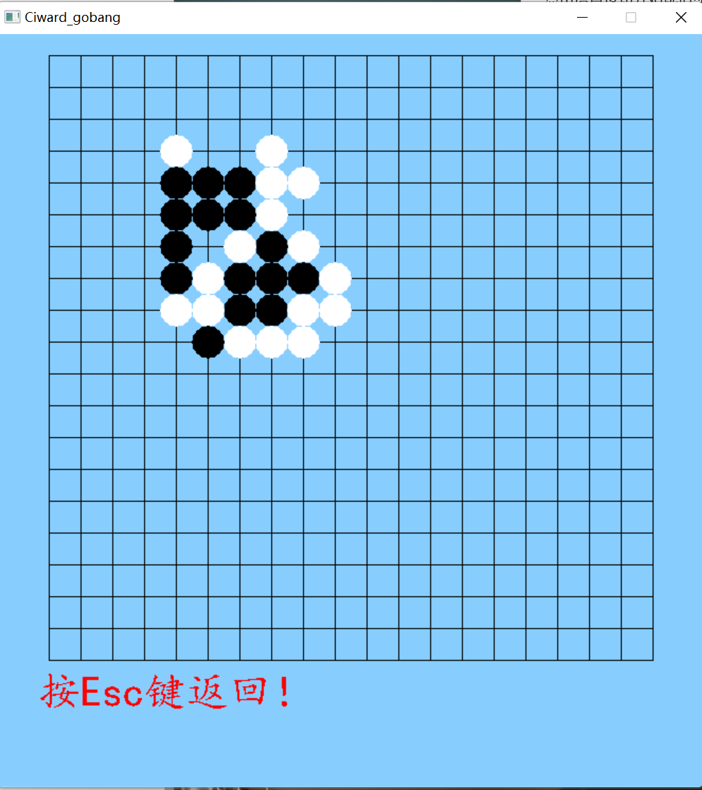

计算导论与程序设计期末作业——五子棋程序实验报告（开发文档）
计算导论与程序设计期末作业——五子棋程序实验报告（开发文档）
| 姓名： 孙少旭 | 学号：202200130169 |
|---|---|
| 班级：2 | 实验学时：8 |
[TOC]
1. 目标实现
用C语言（结合少量C++）实现一个图形化界面的多模式五子棋程序，并具备复盘回放功能。
2. 开发环境准备
2.1 硬件和系统环境
ASUS笔记本电脑，windos11操作系统。
2.2 C开发环境配置
Visual Studio建立项目，提供编译器。
VScode作为IDE编写源代码。
手动下载easyx库，并配置在Visual Studio中。
3. 大体开发流程
- 了解学习easyx库绘图语句和有关函数，建立一个图形窗口
- 基于设计思路实现人人对战
- 设计一个“AI”人机对战
- 添加棋步保存的代码
- 不断完善AI，人工调整参数进行优化
- 加入机机对战测试AI是否达标
4.设计思路
4.1 设计棋盘
定义一下窗口和棋盘大小等常量
1
2
3
4
5
6
7
8
9
10绘图函数
1
2
3
4
5void initView(); //初始化界面
void showPieces(); //显示棋子
void drawPiece(int x, int y, int color); //绘制单个棋子
void ModelShow(); //模式显示
void TurnsShow(); //显示该谁下棋
4.2 人人对战
设置游戏进行时的变量
1
2
3
4
5
6
7int map[map_height][map_width]={0};//棋盘，0表示无子，1表示白子，2表示黑子
int flag[2][4];//“4”表示- | / \ 四个方向，flag[1][]的值为是否活子，2表示活2子，1表示活1子，0表示死子,flag[0][]的值为能连几个棋子
int currentPiece; //当前棋子颜色
int changePiece;//用来改变棋子
int AIx, AIy;//用来记录人机落子位置
int isBreak; //是否结束
int model; //当前模式 1为人机对战 0为人人对战用二维数组储存棋盘，思路较为简单
关键点是：用flag储存当前下的棋子能够连的状态，这将关系到棋局结束的判定，以及后面进行人机对战中AI落点的位置。
model变量为了在复盘并继续时，依然能保持上一局的模式，它将被储存在文件中。
下子动作：获取鼠标点击位置，进行格式化整，得到在棋盘上的位置
1
2x = (m.x - offsetx + piece_size / 2) / piece_size;
y = (m.y - offsety + piece_size / 2) / piece_size;每下一步都有一个极为重要的judge()函数，它的处理结果作用于flag
1
void judge(int y, int x, int color); //判断当前位置4个方向连接的棋子数量，参数为棋子颜色 1白2黑
此函数对输入的（x,y）向- | / \四个方向各走一遍，遇到异色棋或空break，在flag中就存有这步棋的连子状态。
基于flag判断输赢
1
void checkWinner();
最后清除棋盘和flag
4.3 人机对战
- 基本思路：整体遍历一遍棋盘，对每个位置进行打分，取最高值
- 要排除已有棋子的位置，直接continue
- 每遍历一个位置，要进行两组判断，分别为自己下在这里得分，和对手下在这里的风险分
- 经过我的思考和推演，AI的首要目标是保自己不死，即堵对手的棋，因此我将对手的在（x，y）位置的风险分参数arg相对于自己得分设置更大，也就是堵对手的权重更高。
- 对于每一种连子情况（eg 活3，活一3，死3，活4等），采用公式
1 | newScore += arg * flag[1][z]; //arg为参数 |
- 当然，这个位置能连棋子数不同，arg的值是天壤之别，从1到15000，这些参数是由手工测试修改得到（猜想此处如果由机器在每局博弈后修改优化，就可以达到机器学习的效果，但并未实现）
4.4 保存复现棋局
考虑到一个五子棋小游戏，存储多个存档的实用性不强，此处只储存上一局的数据和各局获胜情况，步数。
采用.dat文件格式（文本文件）
建立文件指针类型和相关操作函数
1
2
3
4
5
6
7
8
9
10FILE *stepout;
FILE* stepin;
FILE *scoreout;
FILE *scorein;
void Save(); //保存棋局，可以接着下
void Read();
void saveStep(int x, int y, int piece); //保存单步
void autoPlay(); //自动复盘
void saveScore(); //保存各局获胜情况，步数棋盘按照矩阵样式存储，棋步按行存储。
需要存上次的模式防止错乱。
存储获胜情况时，先读再存，由多少行代表已经是多少局。
Save&Read()是把当前棋盘存下（读取），实现继续游戏。
autoPlay（）则是进行复盘的演示结束后退出。
4.5 机机对战
最后为了测试AI的完备性，添加此模式进行试验
经过测试调整，几乎可以把棋盘填满
5. 效果展示



本博客所有文章除特别声明外，均采用 CC BY-NC-SA 4.0 许可协议。转载请注明来自 曦微的Blog！